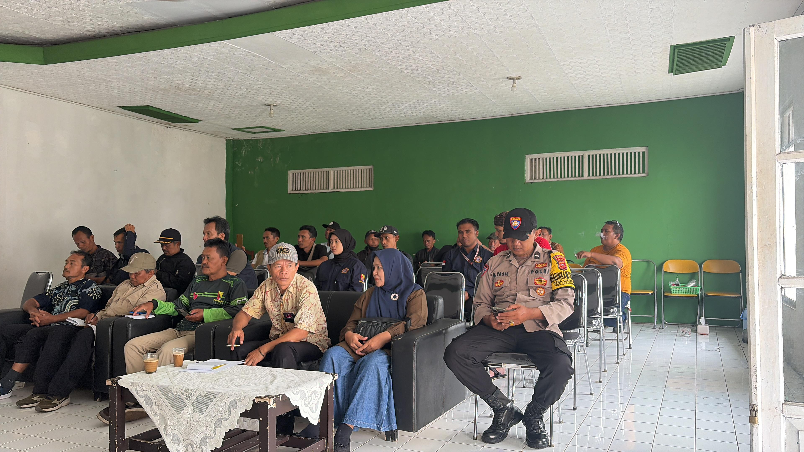
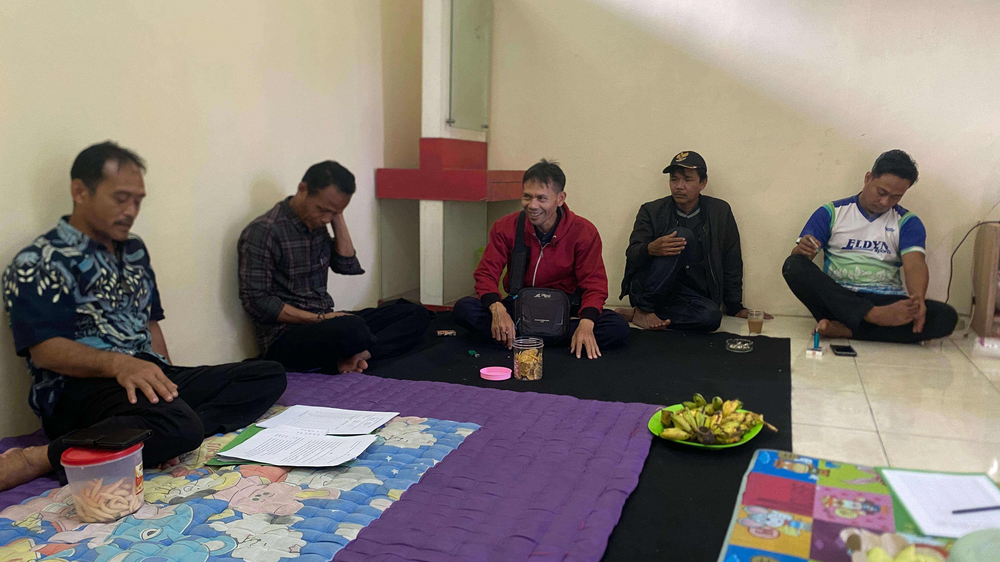
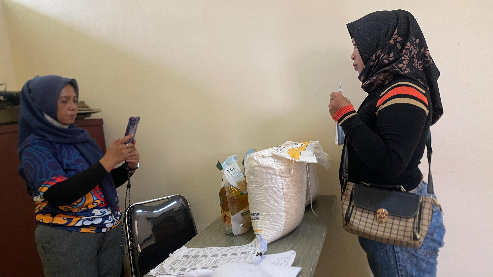
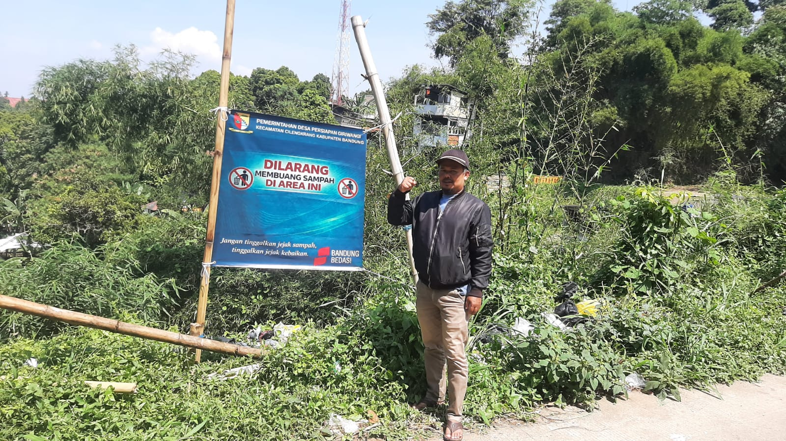
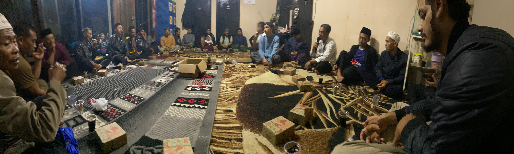

Desa Persiapan Giriwangi
Kec. Cilengkrang · Kab. Bandung
Informasi terbaru tentang peristiwa dan kegiatan desa

Pj. Kepala Desa Persiapan Giriwangi menghadiri musyawarah pembentukan Panitia Pemilihan BPD Desa Girimekar untuk masa bakti 2026–2034. Kegiatan ini bertujuan memastikan proses pemilihan BPD berjalan transparan, tertib, dan sesuai ketentuan yang berlaku.

Perangkat desa menggelar rapat penentuan waktu dan tempat pelaksanaan Halal Bihalal bersama warga sebagai wujud silaturahmi pasca Idul Fitri.

Pemerintah Desa Giriwangi menyalurkan bantuan beras kepada warga yang berhak sebagai bentuk kepedulian terhadap ketahanan pangan masyarakat.

Dalam upaya meningkatkan kesadaran warga, Desa Giriwangi memasang banner larangan membuang sampah sembarangan di titik-titik strategis desa.

Kegiatan tahlil rutin digelar bersama perangkat dan warga desa sebagai wujud nilai religius dan kebersamaan yang dijunjung tinggi oleh masyarakat Giriwangi.
Batas wilayah dan informasi geografis Desa Persiapan Giriwangi
Desa Persiapan Giriwangi
"Terwujudnya Desa Giriwangi yang MAKMUR"
Meningkatkan profesionalisme aparatur pemerintahan desa, aktif, kreatif, dan pelayanan yang prima.
Membangun infrastruktur desa yang berkelanjutan dan merata serta transparansi dalam pengelolaan anggaran.
Mengembangkan usaha milik desa, UMKM, dan potensi lokal desa lainnya yang unggul untuk meningkatkan kesejahteraan masyarakat.
Meningkatkan kualitas pendidikan, kesehatan, sosial, budaya, olahraga dan agama, serta melestarikan kearifan lokal desa yang memberikan kemaslahatan bagi masyarakat.
Memelihara keamanan dan kondusifitas lingkungan dengan mengedepankan musyawarah mufakat dalam kehidupan bermasyarakat.
Makna dan simbolisme di balik logo Desa Persiapan Giriwangi
Desa Persiapan Giriwangi · Kec. Cilengkrang · Kab. Bandung
Logo ini menyampaikan pesan bahwa "GIRIWANGI MAKMUR" adalah kondisi desa yang sejahtera — dicapai melalui kerja keras di sektor riil yang dipadukan dengan strategi pertumbuhan modern, namun tetap berpijak pada nilai-nilai luhur, keharmonisan alam, sosial, dan budaya.
Melambangkan kejayaan, kemuliaan, dan kemewahan. Menegaskan visi keberhasilan yang bersifat material sekaligus spiritual.
Menunjukkan stabilitas, kepercayaan, dan warisan nilai yang kuat dari generasi ke generasi.
Berada di posisi paling atas, melambangkan kesucian, kebangkitan, dan kemurnian niat. Simbol meraih kemakmuran dari nol.
Mengapit bunga teratai sebagai simbol ketahanan pangan dan kesejahteraan masyarakat, melambangkan kecukupan kebutuhan pokok.
Simbol grafik yang mengarah ke atas melambangkan pertumbuhan ekonomi, progres, dan investasi yang terus meningkat.
Melambangkan harapan baru, awal yang cerah, dan energi yang tidak pernah habis untuk membangun masa depan desa.
Melambangkan kesuburan, kedamaian, dan pertumbuhan yang berkelanjutan (sustainability) bagi seluruh warga desa.
Menunjukkan apresiasi terhadap seni budaya dan etnik — kemakmuran yang dicapai tidak melupakan akar budaya bangsa.
Perangkat Desa Persiapan Giriwangi · Tahun 2025